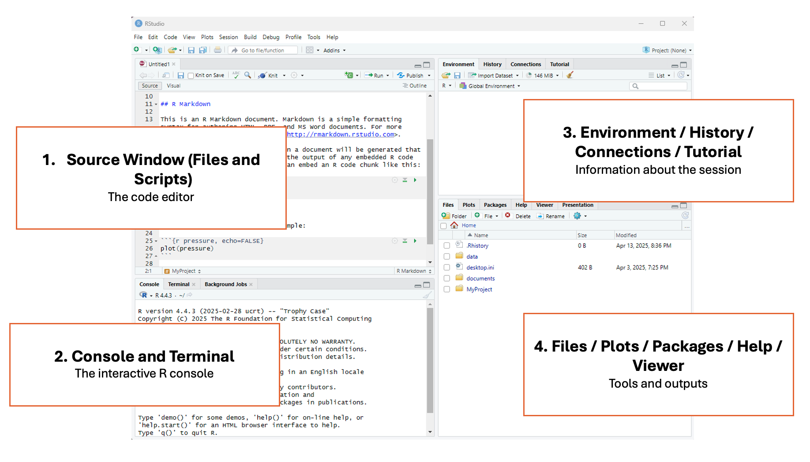

Introduction
RStudio is a program that helps you write and run R code more easily,
especially for working with data, making graphs, and doing
statistics.
In this tutorial, we will:
- Get familiarized with the RStudio interface
- Learn how to set the working directory
- Identify the types of documents we can create in R Studio
- Create an R script to start our work
RStudio Interface
When we launch RStudio for the first time, we notice three main
panels or quadrants:

Once we open a document, the interface will show four main
panels:

1 - Top left panel
Files and scripts (source window or code editor)
This is your code editor, where you write, save, and run R scripts
(.R), RMarkdown documents (.Rmd), or other file types.
2 - Bottom left panel
R console and terminal
This is the interactive R console, where code is executed
immediately. You can:
- Type and run commands interactively (great for testing small bits of
code).
- View outputs, error messages, and warnings in real time.
- Switch to the Terminal tab for system-level commands.
3 - Top right panel
Objects, history, environment, tutorial and connections
This area lets you track what’s happening in your R session.
It has different tabs for different actions:
- Environment: See all objects (like data frames,
functions, variables) currently in memory.
- History: View all commands you’ve previously
run.
- Connections: Manage database connections.
- Tutorial: View built-in interactive tutorials (from
the learnr package).
4 - Bottom right panel
Tree of folders, plots, packages, help, viewer
This panel contains various tools and outputs:
- Files: Navigate your folder structure and open
scripts.
- Plots: View visualizations generated by your
code.
- Packages: Install, load, or update R packages.
- Help: Search R documentation
(
?function_name shows here).
- Viewer: View HTML content, like R Markdown outputs
or Shiny apps.
R Projects
Setting working directory
Most R tutorials and books teach the function setwd()
for setting the working directory. This function manually sets the
working directory during an R session. It tells R where to look for
files and where to save outputs just for that session.
But here’s the problem…
Using setwd() can break your code when:
- Someone else tries to run it on their machine.
- You move your project folder.
- You’re running your code on a server or in cloud environments like
RStudio Cloud.
Since file paths are hardcoded and depend on your machine,
it’s not reproducible.
Create an R Project
An R Project is a feature in RStudio (and supported in base R too)
that provides a self-contained working environment. When you create an R
Project it creates a .Rproj file in a folder and that folder becomes the
root directory of your project. Every time you open the project (via the
.Rproj file), R automatically sets the working directory to that folder.
You can reference files relative to the project root — no need to
hardcode file paths.
This is super useful when you’re working on multiple analyses,
sharing code with collaborators, or version-controlling with Git.
It is a good practice for reproducible research
To create an R Project, select File > New Project

Types of files in R
There are two main types of files we can create in R studio to edit
our code (R script files .R and RMarkdown files
.Rmd)
The R script file (.R) is a plain text file that
contains R code only. Use it when you want to write and run code
line-by-line, such as for data cleaning, analysis, or function building.
It’s good for experimenting, scripting, and running code interactively.
It’s also good for sharing code with other researchers.
The RMarkdown file (.Rmd) has a mix of R code and
written explanations, using Markdown formatting. It can be used to
create dynamic, reproducible reports that can be knitted into HTML, PDF,
or Word documents.It’s great for homework, research reports, dashboards,
or combining narrative with code.
For the purposes of this program we’ll be using R scripts, but if
you’re interested in learning more about RMarkdown, check out:
To create an R script file, select File > New File > R
Script

Literate Programming in R
As mentioned in the session on Reproducible Research: Moving from
Excel to Scripting, we talked about the idea of literate
programming as a framework that provides a human-language explanation of
how a script works in combination with the script itself. We’ll see more
of this in action as we get into more scripting in this and the coming
sessions, but a way to add plain-language to your script involved
putting a # in front of text, which R (and other
programming languages) will recognize as human language and separate
from scripting. Using the # to do this is called
commented code, as is integral in creating reproducible
code.
A simple example
# This is a human language explanation of the code below, which is calculating 2 + 2
2 + 2
Your Turn!
Create your first RProject. Let’s figure out what we should call
it!
Create your first R script file. Let’s call it
"my-first-script"
Easing Into R
R as a Calculator
A good starting place for learning R is utilizing one of its most
basic functions, which is that of a calculator. As mentioned above,
there are four panels within RStudio, and to begin, let’s look at how
this works in the R Console (bottom left panel).
Adding Numbers
You can add numbers using the plus sign +:
2 + 2
Subtracting Numbers
You can subtract numbers using a hyphen -:
10 -4
Dividing Numbers
You can divide numbers using a slash /:
20/4
Multiplying Numbers
You can multiply numbers using the star *:
10 * 10
A quick note on the R console
As you can see from the actions above, the R console can be used as a
place to type very small calculations or actions. However, a big draw
back of using the console is that you can’t save the calculations that
you are creating, and there is no way to add comments to your code. This
is why we use R script files, as they allow us to keep track of
everything that we’re doing in R with sufficient documentation for
others (and yourself!) to interpret.
Working in an R Script File
Let’s move to the R script file we have just created, called
my-first-script, and that is located in the top left panel.
Let’s first try to re-run some of the mathematical calculations we ran
above, but this time in the script.
2 + 2
10 - 4
20/4
10 * 10
-Click on the save button in the top left panel. Make sure you are in
the correct folder. Save the file as
’script_js_timeuse_2025.Rmd
-Click the knit icon at the top of your code editor to preview your
formatted file in .html
We will continue adding information to this RMarkdown file later
today and the rest of the week.
LS0tDQp0aXRsZTogIlNldHRpbmcgdXAgUiINCnBhZ2V0aXRsZTogIlNldHRpbmcgdXAgUiINCm91dHB1dDoNCiAgaHRtbF9kb2N1bWVudDoNCiAgICBjb2RlX2ZvbGRpbmc6IHNob3cgIyBhbGxvd3MgdG9nZ2xpbmcgb2Ygc2hvd2luZyBhbmQgaGlkaW5nIGNvZGUuIFJlbW92ZSBpZiBub3QgdXNpbmcgY29kZS4NCiAgICBjb2RlX2Rvd25sb2FkOiB0cnVlICMgYWxsb3dzIHRoZSB1c2VyIHRvIGRvd25sb2FkIHRoZSBzb3VyY2UgLlJtZCBmaWxlLiBSZW1vdmUgaWYgbm90IHVzaW5nIGNvZGUuDQogICAgaW5jbHVkZXM6DQogICAgICBhZnRlcl9ib2R5OiBmb290ZXIuaHRtbCAjIGluY2x1ZGUgYSBjdXN0b20gZm9vdGVyLg0KICAgIHRvYzogdHJ1ZQ0KICAgIHRvY19kZXB0aDogMw0KICAgIHRvY19mbG9hdDoNCiAgICAgIGNvbGxhcHNlZDogZmFsc2UNCiAgICAgIHNtb290aF9zY3JvbGw6IGZhbHNlDQotLS0NCmBgYHtyIHNldHVwLCBpbmNsdWRlPUZBTFNFfQ0Ka25pdHI6Om9wdHNfY2h1bmskc2V0KG1lc3NhZ2UgPSBGQUxTRSwgd2FybmluZ3MgPSBGQUxTRSkNCmBgYA0KDQojIyBJbnRyb2R1Y3Rpb24NCg0KOjo6aW50cm8NClJTdHVkaW8gaXMgYSBwcm9ncmFtIHRoYXQgaGVscHMgeW91IHdyaXRlIGFuZCBydW4gUiBjb2RlIG1vcmUgZWFzaWx5LCBlc3BlY2lhbGx5IGZvciB3b3JraW5nIHdpdGggZGF0YSwgbWFraW5nIGdyYXBocywgYW5kIGRvaW5nIHN0YXRpc3RpY3MuDQo6OjoNCg0KSW4gdGhpcyB0dXRvcmlhbCwgd2Ugd2lsbDoNCg0KLSBHZXQgZmFtaWxpYXJpemVkIHdpdGggdGhlIFJTdHVkaW8gaW50ZXJmYWNlDQotIExlYXJuIGhvdyB0byBzZXQgdGhlIHdvcmtpbmcgZGlyZWN0b3J5DQotIElkZW50aWZ5IHRoZSB0eXBlcyBvZiBkb2N1bWVudHMgd2UgY2FuIGNyZWF0ZSBpbiBSIFN0dWRpbw0KLSBDcmVhdGUgYW4gUiBzY3JpcHQgdG8gc3RhcnQgb3VyIHdvcmsNCi0gDQoNCiMjIFJTdHVkaW8gSW50ZXJmYWNlDQoNCldoZW4gd2UgbGF1bmNoIFJTdHVkaW8gZm9yIHRoZSBmaXJzdCB0aW1lLCB3ZSBub3RpY2UgdGhyZWUgbWFpbiBwYW5lbHMgb3IgcXVhZHJhbnRzOiANCg0KIVtdKGltYWdlcy9kYXkyX1JTdHVkaW9fM3BhbmVsLnBuZykNCg0KT25jZSB3ZSBvcGVuIGEgZG9jdW1lbnQsIHRoZSBpbnRlcmZhY2Ugd2lsbCBzaG93IGZvdXIgbWFpbiBwYW5lbHM6DQoNCiFbXShpbWFnZXMvZGF5Ml9SU3R1ZGlvXzRwYW5lbC5wbmcpDQoNCiMjIyAxIC0gVG9wIGxlZnQgcGFuZWwNCiMjIyMgRmlsZXMgYW5kIHNjcmlwdHMgKHNvdXJjZSB3aW5kb3cgb3IgY29kZSBlZGl0b3IpDQoNClRoaXMgaXMgeW91ciBjb2RlIGVkaXRvciwgd2hlcmUgeW91IHdyaXRlLCBzYXZlLCBhbmQgcnVuIFIgc2NyaXB0cyAoLlIpLCBSTWFya2Rvd24gZG9jdW1lbnRzICguUm1kKSwgb3Igb3RoZXIgZmlsZSB0eXBlcy4NCg0KIyMjIDIgLSBCb3R0b20gbGVmdCBwYW5lbA0KIyMjIyBSIGNvbnNvbGUgYW5kIHRlcm1pbmFsDQoNClRoaXMgaXMgdGhlIGludGVyYWN0aXZlIFIgY29uc29sZSwgd2hlcmUgY29kZSBpcyBleGVjdXRlZCBpbW1lZGlhdGVseS4gWW91IGNhbjoNCg0KIC0gVHlwZSBhbmQgcnVuIGNvbW1hbmRzIGludGVyYWN0aXZlbHkgKGdyZWF0IGZvciB0ZXN0aW5nIHNtYWxsIGJpdHMgb2YgY29kZSkuDQogLSBWaWV3IG91dHB1dHMsIGVycm9yIG1lc3NhZ2VzLCBhbmQgd2FybmluZ3MgaW4gcmVhbCB0aW1lLg0KIC0gU3dpdGNoIHRvIHRoZSBUZXJtaW5hbCB0YWIgZm9yIHN5c3RlbS1sZXZlbCBjb21tYW5kcy4NCg0KIyMjIDMgLSBUb3AgcmlnaHQgcGFuZWwNCiMjIyMgT2JqZWN0cywgaGlzdG9yeSwgZW52aXJvbm1lbnQsIHR1dG9yaWFsIGFuZCBjb25uZWN0aW9ucw0KDQpUaGlzIGFyZWEgbGV0cyB5b3UgdHJhY2sgd2hhdOKAmXMgaGFwcGVuaW5nIGluIHlvdXIgUiBzZXNzaW9uLg0KDQpJdCBoYXMgZGlmZmVyZW50IHRhYnMgZm9yIGRpZmZlcmVudCBhY3Rpb25zOiANCg0KIC0gKipFbnZpcm9ubWVudDoqKiBTZWUgYWxsIG9iamVjdHMgKGxpa2UgZGF0YSBmcmFtZXMsIGZ1bmN0aW9ucywgdmFyaWFibGVzKSBjdXJyZW50bHkgaW4gbWVtb3J5Lg0KIC0gKipIaXN0b3J5OioqIFZpZXcgYWxsIGNvbW1hbmRzIHlvdeKAmXZlIHByZXZpb3VzbHkgcnVuLg0KIC0gKipDb25uZWN0aW9uczoqKiBNYW5hZ2UgZGF0YWJhc2UgY29ubmVjdGlvbnMuDQogLSAqKlR1dG9yaWFsOioqIFZpZXcgYnVpbHQtaW4gaW50ZXJhY3RpdmUgdHV0b3JpYWxzIChmcm9tIHRoZSBsZWFybnIgcGFja2FnZSkuDQoNCiMjIyA0IC0gQm90dG9tIHJpZ2h0IHBhbmVsDQojIyMjIFRyZWUgb2YgZm9sZGVycywgcGxvdHMsIHBhY2thZ2VzLCBoZWxwLCB2aWV3ZXINCg0KVGhpcyBwYW5lbCBjb250YWlucyB2YXJpb3VzIHRvb2xzIGFuZCBvdXRwdXRzOg0KDQogLSAqKkZpbGVzOioqIE5hdmlnYXRlIHlvdXIgZm9sZGVyIHN0cnVjdHVyZSBhbmQgb3BlbiBzY3JpcHRzLg0KIC0gKipQbG90czoqKiBWaWV3IHZpc3VhbGl6YXRpb25zIGdlbmVyYXRlZCBieSB5b3VyIGNvZGUuDQogLSAqKlBhY2thZ2VzOioqIEluc3RhbGwsIGxvYWQsIG9yIHVwZGF0ZSBSIHBhY2thZ2VzLg0KIC0gKipIZWxwOioqIFNlYXJjaCBSIGRvY3VtZW50YXRpb24gKGA/ZnVuY3Rpb25fbmFtZWAgc2hvd3MgaGVyZSkuDQogLSAqKlZpZXdlcjoqKiBWaWV3IEhUTUwgY29udGVudCwgbGlrZSBSIE1hcmtkb3duIG91dHB1dHMgb3IgU2hpbnkgYXBwcy4NCg0KIyMgUiBQcm9qZWN0cyANCg0KIyMjIFNldHRpbmcgd29ya2luZyBkaXJlY3RvcnkNCg0KTW9zdCBSIHR1dG9yaWFscyBhbmQgYm9va3MgdGVhY2ggdGhlIGZ1bmN0aW9uIGBzZXR3ZCgpYCBmb3Igc2V0dGluZyB0aGUgd29ya2luZyBkaXJlY3RvcnkuIFRoaXMgZnVuY3Rpb24gbWFudWFsbHkgc2V0cyB0aGUgd29ya2luZyBkaXJlY3RvcnkgZHVyaW5nIGFuIFIgc2Vzc2lvbi4gSXQgdGVsbHMgUiB3aGVyZSB0byBsb29rIGZvciBmaWxlcyBhbmQgd2hlcmUgdG8gc2F2ZSBvdXRwdXRzIGp1c3QgZm9yIHRoYXQgc2Vzc2lvbi4NCg0KQnV0IGhlcmXigJlzIHRoZSBwcm9ibGVtLi4uDQoNClVzaW5nIGBzZXR3ZCgpYCBjYW4gYnJlYWsgeW91ciBjb2RlIHdoZW46DQoNCiAtIFNvbWVvbmUgZWxzZSB0cmllcyB0byBydW4gaXQgb24gdGhlaXIgbWFjaGluZS4NCiAtIFlvdSBtb3ZlIHlvdXIgcHJvamVjdCBmb2xkZXIuDQogLSBZb3UncmUgcnVubmluZyB5b3VyIGNvZGUgb24gYSBzZXJ2ZXIgb3IgaW4gY2xvdWQgZW52aXJvbm1lbnRzIGxpa2UgUlN0dWRpbyBDbG91ZC4NCg0KU2luY2UgZmlsZSBwYXRocyBhcmUgaGFyZGNvZGVkIGFuZCBkZXBlbmQgb24geW91ciBtYWNoaW5lLCAqKml0J3Mgbm90IHJlcHJvZHVjaWJsZSoqLg0KDQojIyMgQ3JlYXRlIGFuIFIgUHJvamVjdA0KDQpBbiBSIFByb2plY3QgaXMgYSBmZWF0dXJlIGluIFJTdHVkaW8gKGFuZCBzdXBwb3J0ZWQgaW4gYmFzZSBSIHRvbykgdGhhdCBwcm92aWRlcyBhIHNlbGYtY29udGFpbmVkIHdvcmtpbmcgZW52aXJvbm1lbnQuIFdoZW4geW91IGNyZWF0ZSBhbiBSIFByb2plY3QgaXQgY3JlYXRlcyBhIC5ScHJvaiBmaWxlIGluIGEgZm9sZGVyIGFuZCB0aGF0IGZvbGRlciBiZWNvbWVzIHRoZSByb290IGRpcmVjdG9yeSBvZiB5b3VyIHByb2plY3QuIEV2ZXJ5IHRpbWUgeW91IG9wZW4gdGhlIHByb2plY3QgKHZpYSB0aGUgLlJwcm9qIGZpbGUpLCBSIGF1dG9tYXRpY2FsbHkgc2V0cyB0aGUgd29ya2luZyBkaXJlY3RvcnkgdG8gdGhhdCBmb2xkZXIuIFlvdSBjYW4gcmVmZXJlbmNlIGZpbGVzIHJlbGF0aXZlIHRvIHRoZSBwcm9qZWN0IHJvb3Qg4oCUIG5vIG5lZWQgdG8gaGFyZGNvZGUgZmlsZSBwYXRocy4NCg0KVGhpcyBpcyBzdXBlciB1c2VmdWwgd2hlbiB5b3UncmUgd29ya2luZyBvbiBtdWx0aXBsZSBhbmFseXNlcywgc2hhcmluZyBjb2RlIHdpdGggY29sbGFib3JhdG9ycywgb3IgdmVyc2lvbi1jb250cm9sbGluZyB3aXRoIEdpdC4gKipJdCBpcyBhIGdvb2QgcHJhY3RpY2UgZm9yIHJlcHJvZHVjaWJsZSByZXNlYXJjaCoqDQoNClRvIGNyZWF0ZSBhbiBSIFByb2plY3QsIHNlbGVjdCBGaWxlID4gTmV3IFByb2plY3QNCg0KIVtdKGltYWdlcy9kYXkyX0NyZWF0ZVByb2plY3QuZ2lmKQ0KDQoNCiMjIFR5cGVzIG9mIGZpbGVzIGluIFINCg0KVGhlcmUgYXJlIHR3byBtYWluIHR5cGVzIG9mIGZpbGVzIHdlIGNhbiBjcmVhdGUgaW4gUiBzdHVkaW8gdG8gZWRpdCBvdXIgY29kZSAoUiBzY3JpcHQgZmlsZXMgYC5SYCBhbmQgUk1hcmtkb3duIGZpbGVzIGAuUm1kYCkNCg0KVGhlIFIgc2NyaXB0IGZpbGUgKGAuUmApIGlzIGEgcGxhaW4gdGV4dCBmaWxlIHRoYXQgY29udGFpbnMgUiBjb2RlIG9ubHkuIFVzZSBpdCB3aGVuIHlvdSB3YW50IHRvIHdyaXRlIGFuZCBydW4gY29kZSBsaW5lLWJ5LWxpbmUsIHN1Y2ggYXMgZm9yIGRhdGEgY2xlYW5pbmcsIGFuYWx5c2lzLCBvciBmdW5jdGlvbiBidWlsZGluZy4gSXQncyBnb29kIGZvciBleHBlcmltZW50aW5nLCBzY3JpcHRpbmcsIGFuZCBydW5uaW5nIGNvZGUgaW50ZXJhY3RpdmVseS4gSXQncyBhbHNvIGdvb2QgZm9yIHNoYXJpbmcgY29kZSB3aXRoIG90aGVyIHJlc2VhcmNoZXJzLg0KDQpUaGUgUk1hcmtkb3duIGZpbGUgKGAuUm1kYCkgaGFzIGEgbWl4IG9mIFIgY29kZSBhbmQgd3JpdHRlbiBleHBsYW5hdGlvbnMsIHVzaW5nIE1hcmtkb3duIGZvcm1hdHRpbmcuICBJdCBjYW4gYmUgdXNlZCB0byBjcmVhdGUgZHluYW1pYywgcmVwcm9kdWNpYmxlIHJlcG9ydHMgdGhhdCBjYW4gYmUga25pdHRlZCBpbnRvIEhUTUwsIFBERiwgb3IgV29yZCBkb2N1bWVudHMuSXQncyBncmVhdCBmb3IgaG9tZXdvcmssIHJlc2VhcmNoIHJlcG9ydHMsIGRhc2hib2FyZHMsIG9yIGNvbWJpbmluZyBuYXJyYXRpdmUgd2l0aCBjb2RlLg0KDQpGb3IgdGhlIHB1cnBvc2VzIG9mIHRoaXMgcHJvZ3JhbSB3ZSdsbCBiZSB1c2luZyBSIHNjcmlwdHMsIGJ1dCBpZiB5b3UncmUgaW50ZXJlc3RlZCBpbiBsZWFybmluZyBtb3JlIGFib3V0IFJNYXJrZG93biwgY2hlY2sgb3V0Og0KDQoqIDxhIGhyZWY9Imh0dHBzOi8vcm1hcmtkb3duLnJzdHVkaW8uY29tL2xlc3Nvbi04Lmh0bWwiPlJNYXJrZG93biBsZXNzb24gZnJvbSBSU3R1ZGlvPC9hPg0KKiA8YSBocmVmPSJodHRwczovL2Jvb2tkb3duLm9yZy95aWh1aS9ybWFya2Rvd24vIj5STWFya2Rvd24gZGVmaW5pdGl2ZSBndWlkZTwvYT4gDQoNCjxicj4NCg0KVG8gY3JlYXRlIGFuIFIgc2NyaXB0IGZpbGUsIHNlbGVjdCBGaWxlID4gTmV3IEZpbGUgPiBSIFNjcmlwdA0KDQohW10oaW1hZ2VzL2Jsb2NrM19jcmVhdGUtci1zY3JpcHQuZ2lmKQ0KDQoNCiMjIExpdGVyYXRlIFByb2dyYW1taW5nIGluIFINCkFzIG1lbnRpb25lZCBpbiB0aGUgc2Vzc2lvbiBvbiAqUmVwcm9kdWNpYmxlIFJlc2VhcmNoOiBNb3ZpbmcgZnJvbSBFeGNlbCB0byBTY3JpcHRpbmcqLCB3ZSB0YWxrZWQgYWJvdXQgdGhlIGlkZWEgb2YgbGl0ZXJhdGUgcHJvZ3JhbW1pbmcgYXMgYSBmcmFtZXdvcmsgdGhhdCBwcm92aWRlcyBhIGh1bWFuLWxhbmd1YWdlIGV4cGxhbmF0aW9uIG9mIGhvdyBhIHNjcmlwdCB3b3JrcyBpbiBjb21iaW5hdGlvbiB3aXRoIHRoZSBzY3JpcHQgaXRzZWxmLiAgV2UnbGwgc2VlIG1vcmUgb2YgdGhpcyBpbiBhY3Rpb24gYXMgd2UgZ2V0IGludG8gbW9yZSBzY3JpcHRpbmcgaW4gdGhpcyBhbmQgdGhlIGNvbWluZyBzZXNzaW9ucywgYnV0IGEgd2F5IHRvIGFkZCBwbGFpbi1sYW5ndWFnZSB0byB5b3VyIHNjcmlwdCBpbnZvbHZlZCBwdXR0aW5nIGEgYCNgIGluIGZyb250IG9mIHRleHQsIHdoaWNoIFIgKGFuZCBvdGhlciBwcm9ncmFtbWluZyBsYW5ndWFnZXMpIHdpbGwgcmVjb2duaXplIGFzIGh1bWFuIGxhbmd1YWdlIGFuZCBzZXBhcmF0ZSBmcm9tIHNjcmlwdGluZy4gIFVzaW5nIHRoZSBgI2AgdG8gZG8gdGhpcyBpcyBjYWxsZWQgKipjb21tZW50ZWQgY29kZSoqLCBhcyBpcyBpbnRlZ3JhbCBpbiBjcmVhdGluZyByZXByb2R1Y2libGUgY29kZS4NCg0KKipBIHNpbXBsZSBleGFtcGxlKioNCg0KYGBge3IsIHJlc3VsdHMgPSBGQUxTRX0NCiMgVGhpcyBpcyBhIGh1bWFuIGxhbmd1YWdlIGV4cGxhbmF0aW9uIG9mIHRoZSBjb2RlIGJlbG93LCB3aGljaCBpcyBjYWxjdWxhdGluZyAyICsgMg0KMiArIDINCmBgYA0KDQoNCiMjIFlvdXIgVHVybiEgDQoNCjo6OnF1ZXN0aW9uDQpDcmVhdGUgeW91ciBmaXJzdCBSUHJvamVjdC4gTGV0J3MgZmlndXJlIG91dCB3aGF0IHdlIHNob3VsZCBjYWxsIGl0IQ0KOjo6DQoNCjo6OnF1ZXN0aW9uDQpDcmVhdGUgeW91ciBmaXJzdCBSIHNjcmlwdCBmaWxlLiBMZXQncyBjYWxsIGl0IGAibXktZmlyc3Qtc2NyaXB0ImAgDQo6OjoNCg0KDQojIyBFYXNpbmcgSW50byBSDQoNCiMjIyBSIGFzIGEgQ2FsY3VsYXRvcg0KDQpBIGdvb2Qgc3RhcnRpbmcgcGxhY2UgZm9yIGxlYXJuaW5nIFIgaXMgdXRpbGl6aW5nIG9uZSBvZiBpdHMgbW9zdCBiYXNpYyBmdW5jdGlvbnMsIHdoaWNoIGlzIHRoYXQgb2YgYSBjYWxjdWxhdG9yLiAgQXMgbWVudGlvbmVkIGFib3ZlLCB0aGVyZSBhcmUgZm91ciBwYW5lbHMgd2l0aGluIFJTdHVkaW8sIGFuZCB0byBiZWdpbiwgbGV0J3MgbG9vayBhdCBob3cgdGhpcyB3b3JrcyBpbiB0aGUgUiBDb25zb2xlIChib3R0b20gbGVmdCBwYW5lbCkuDQoNCiMjIyMgQWRkaW5nIE51bWJlcnMNCg0KWW91IGNhbiBhZGQgbnVtYmVycyB1c2luZyB0aGUgcGx1cyBzaWduIGArYDoNCmBgYHtyLCByZXN1bHRzID0gRkFMU0V9DQoyICsgMg0KYGBgDQoNCg0KIyMjIyBTdWJ0cmFjdGluZyBOdW1iZXJzDQoNCllvdSBjYW4gc3VidHJhY3QgbnVtYmVycyB1c2luZyBhIGh5cGhlbiBgLWA6DQpgYGB7ciwgcmVzdWx0cyA9IEZBTFNFfQ0KMTAgLTQNCmBgYA0KDQoNCiMjIyMgRGl2aWRpbmcgTnVtYmVycw0KDQpZb3UgY2FuIGRpdmlkZSBudW1iZXJzIHVzaW5nIGEgc2xhc2ggYC9gOg0KYGBge3IsIHJlc3VsdHMgPSBGQUxTRX0NCjIwLzQNCmBgYA0KDQoNCiMjIyMgTXVsdGlwbHlpbmcgTnVtYmVycw0KDQpZb3UgY2FuIG11bHRpcGx5IG51bWJlcnMgdXNpbmcgdGhlIHN0YXIgYCpgOg0KYGBge3IsIHJlc3VsdHMgPSBGQUxTRX0NCjEwICogMTANCmBgYA0KDQo8YnI+DQoNCjo6Om5vdGUNCg0KKipBIHF1aWNrIG5vdGUgb24gdGhlIFIgY29uc29sZSoqDQoNCkFzIHlvdSBjYW4gc2VlIGZyb20gdGhlIGFjdGlvbnMgYWJvdmUsIHRoZSBSIGNvbnNvbGUgY2FuIGJlIHVzZWQgYXMgYSBwbGFjZSB0byB0eXBlIHZlcnkgc21hbGwgY2FsY3VsYXRpb25zIG9yIGFjdGlvbnMuICBIb3dldmVyLCBhIGJpZyBkcmF3IGJhY2sgb2YgdXNpbmcgdGhlIGNvbnNvbGUgaXMgdGhhdCB5b3UgY2FuJ3Qgc2F2ZSB0aGUgY2FsY3VsYXRpb25zIHRoYXQgeW91IGFyZSBjcmVhdGluZywgYW5kIHRoZXJlIGlzIG5vIHdheSB0byBhZGQgY29tbWVudHMgdG8geW91ciBjb2RlLiAgVGhpcyBpcyB3aHkgd2UgdXNlIFIgc2NyaXB0IGZpbGVzLCBhcyB0aGV5IGFsbG93IHVzIHRvIGtlZXAgdHJhY2sgb2YgZXZlcnl0aGluZyB0aGF0IHdlJ3JlIGRvaW5nIGluIFIgd2l0aCBzdWZmaWNpZW50IGRvY3VtZW50YXRpb24gZm9yIG90aGVycyAoYW5kIHlvdXJzZWxmISkgdG8gaW50ZXJwcmV0Lg0KDQo6OjoNCg0KDQojIyMgV29ya2luZyBpbiBhbiBSIFNjcmlwdCBGaWxlDQoNCkxldCdzIG1vdmUgdG8gdGhlIFIgc2NyaXB0IGZpbGUgd2UgaGF2ZSBqdXN0IGNyZWF0ZWQsIGNhbGxlZCBgbXktZmlyc3Qtc2NyaXB0YCwgYW5kIHRoYXQgaXMgbG9jYXRlZCBpbiB0aGUgdG9wIGxlZnQgcGFuZWwuICBMZXQncyBmaXJzdCB0cnkgdG8gcmUtcnVuIHNvbWUgb2YgdGhlIG1hdGhlbWF0aWNhbCBjYWxjdWxhdGlvbnMgd2UgcmFuIGFib3ZlLCBidXQgdGhpcyB0aW1lIGluIHRoZSBzY3JpcHQuDQoNCmBgYHtyLCByZXN1bHRzID0gRkFMU0V9DQoyICsgMg0KMTAgLSA0DQoyMC80DQoxMCAqIDEwDQpgYGANCg0KDQoNCg0KIA0KOjo6cXVlc3Rpb24NCg0KLUNsaWNrIG9uIHRoZSBzYXZlIGJ1dHRvbiBpbiB0aGUgdG9wIGxlZnQgcGFuZWwuIE1ha2Ugc3VyZSB5b3UgYXJlIGluIHRoZSBjb3JyZWN0IGZvbGRlci4gU2F2ZSB0aGUgZmlsZSBhcyAnYHNjcmlwdF9qc190aW1ldXNlXzIwMjUuUm1kYA0KDQotQ2xpY2sgdGhlIGtuaXQgaWNvbiBhdCB0aGUgdG9wIG9mIHlvdXIgY29kZSBlZGl0b3IgdG8gcHJldmlldyB5b3VyIGZvcm1hdHRlZCBmaWxlIGluIC5odG1sDQo6OjoNCg0KV2Ugd2lsbCBjb250aW51ZSBhZGRpbmcgaW5mb3JtYXRpb24gdG8gdGhpcyBSTWFya2Rvd24gZmlsZSBsYXRlciB0b2RheSBhbmQgdGhlIHJlc3Qgb2YgdGhlIHdlZWsuDQoNCg0KDQoNCg0K